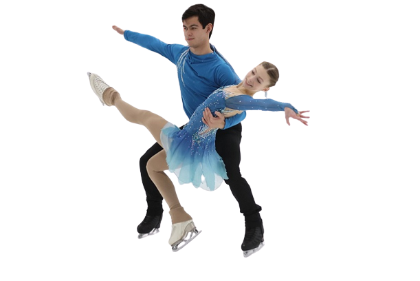

Moja iskustva s
klizanjem
Klizanje radi na gotovo svim mišićnim skupinama u tijelu, a klizanje zahtijeva sinkronizirano kretanje nogu, što je važno za fleksibilnost zglobova. Također izgrađuje mišiće nogu i trbušne mišiće. Kao i svaki drugi trening, klizanje je odlično za zdravlje kardiovaskularnog sustava - potiče pumpanje krvi i ubrzava rad srca.


- 